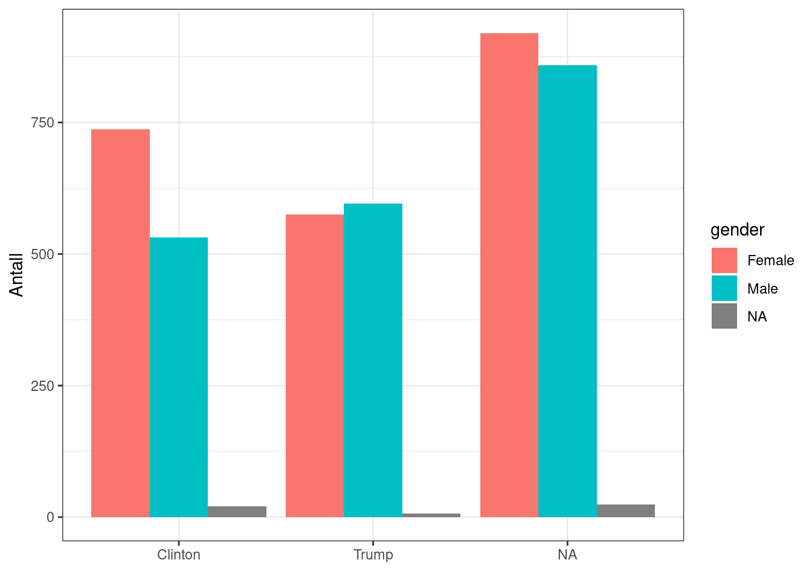
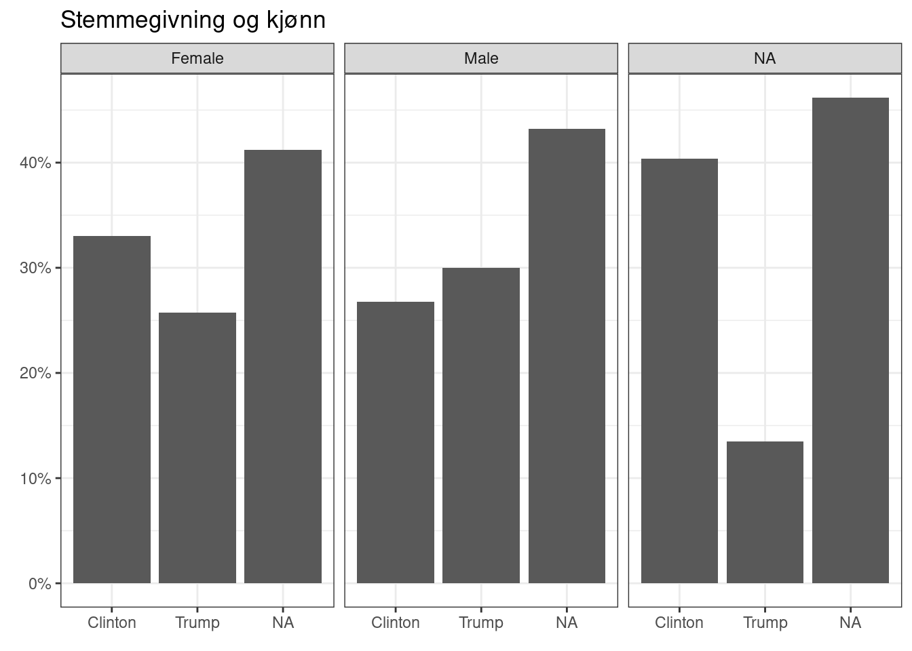
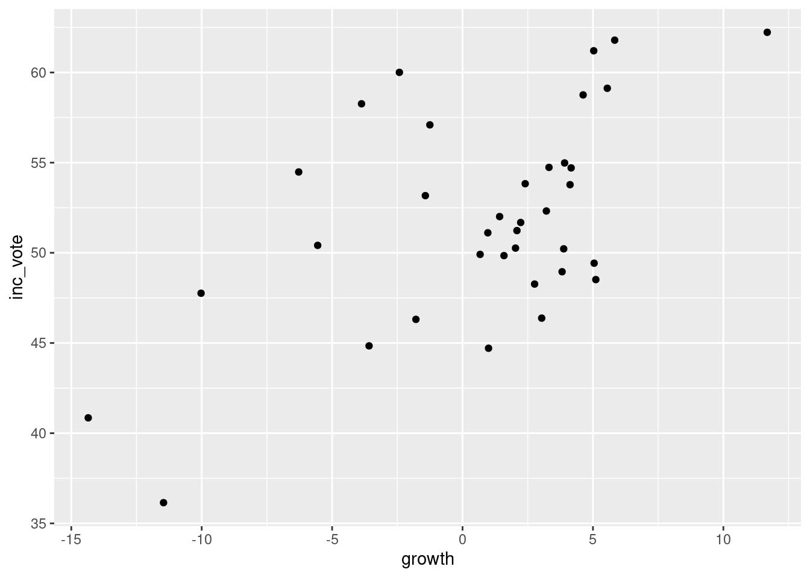
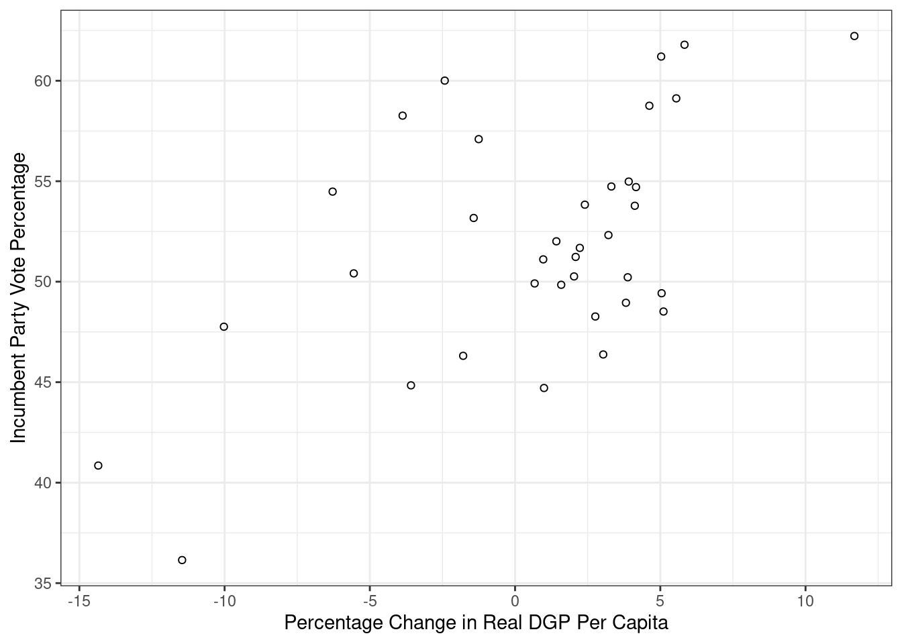
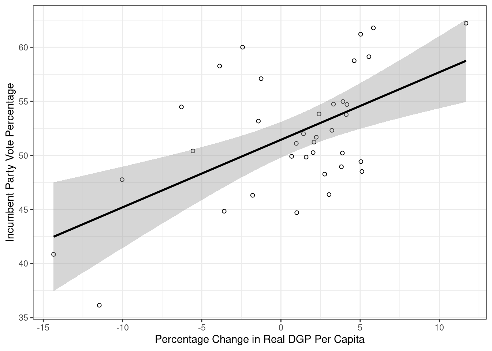

# Installerer nye pakker
install.packages("stargazer")
install.packages("gmodels")
install.packages("scales")Seminar 4 – Missingverdier, statistikk og bivariate sammenhenger
I løpet av dette seminaret skal vi:
- Repetere litt om pakker og innlastning av data.
- Missingverdier (NA).
- Statistiske mål.
- Bivariat hypotesetest
Repetisjon
Pakker og funksjoner
Når vi jobber i R så bruker vi mange funksjoner. Noen av disse, som for eksempel mean() og load() er en del av base R. Det betyr at vi ikke trenger å installere og laste inn noen ekstra pakker for at de skal virker. Andre funksjoner som for eksempel %>%, read.dta() og ggplot() ligger i pakker. Da må vi installere og laste inn disse pakkene for å kunne bruke funksjonen.
Installere pakker: Vi bruker install.packages("pakkenavn") for å installere pakker. Dette trenger vi bare å gjøre én gang.
Laste inn pakker: Vi bruker library(pakkenavn) for å laste inn en pakke. Dette må vi gjøre hver gang vi åpner Rstudio på nytt eller åpner en ny sesjon. Dersom du får opp en feilmelding som “Error in library(pakkenavn) : there is no package called ‘pakkenavn’” så indikerer det at du ikke har installert pakken. Da må du kjøre install.packages("pakkenavn") før du forsøker library(pakkenavn) igjen.
Først installerer vi nye pakker og laster inn pakkene vi skal bruke i dagens seminar:
# Laster inn pakker
library(tidyverse)
library(stargazer)
library(gmodels)
library(scales)Laste inn data
Det neste vi skal gjøre er å laste inn data. Som vi allerede har snakket om så finnes det mange typer data og hver type krever egne koder for innlastning. I dag skal vi bruke noen ulike datasett; et fra ESS og to fra Kellstedt og Whitten. Det første skal vi laste inn data i csv.-format ved hjelp av funksjonen read.csv. Du kan finne data på Canvas, eller her. Vi leser inn disse dataene og putter dem i objektet ess:
# For å laste inn .csv-filer
ess <- read.csv("../data/internett.csv")Om man vil lagre et objekt som en .csv-fil, kan man bruke funksjonen write.csv():1
# For å lagre .csv-filer
write.csv(ess, file = "der/du/vil/lagre")Datasettet heter internett.csv og omhandler internettbruken til italienere. Det betstår av et utvalg variabler hentet fra European Social Survey (ESS) runde 9 (2018). Enhetene er italienske statsborgere og samlet innholder datasettet 2745 observasjoner og 5 variabler:
| Variabel | Verdi | Beskrivelse |
|---|---|---|
| internettbruk | 1 | Aldri |
| … | … | |
| 5 | Hver dag | |
| kjonn | 1 | Mann |
| 2 | Kvinne | |
| alder | 16-90 | Respondentens alder |
| utdanning | 0-37 | Ant. år med fullført utdanning |
| tillit | 0 | Ingen tillitt til det italienske parlamentet |
| … | … | |
| 10 | Fullstendig tillit til det italienske parlamentet |
Før vi går videre vil vi se på dataene våre. Disse kodene har vi sett på tidligere, men vi repeterer det igjen.
Vi kan bruke View() til å åpne en egen fane med datasettet vårt:
View(ess)Vi kan bruke head() til å undersøke de seks første observasjonene og tail() til å undersøke de seks siste observasjonene, eller glimpse() for å myse litt på innholdet i data:
head(ess) internettbruk kjonn alder utdanning tillit
1 5 2 67 18 8
2 5 1 45 11 6
3 1 2 73 8 0
4 5 1 21 8 NA
5 1 2 86 3 6
6 5 2 53 17 6tail(ess) internettbruk kjonn alder utdanning tillit
2740 2 1 78 2 8
2741 1 2 82 12 8
2742 3 1 44 10 6
2743 5 1 52 13 3
2744 5 2 58 13 7
2745 4 2 56 8 6glimpse(ess)Rows: 2,745
Columns: 5
$ internettbruk <int> 5, 5, 1, 5, 1, 5, 1, 5, 1, 4, 1, 1, 1, 5, 5, 5, 5, 4, 5,…
$ kjonn <int> 2, 1, 2, 1, 2, 2, 1, 2, 2, 1, 2, 2, 1, 1, 2, 1, 2, 2, 1,…
$ alder <int> 67, 45, 73, 21, 86, 53, 77, 35, 66, 52, 83, 86, 62, 40, …
$ utdanning <int> 18, 11, 8, 8, 3, 17, 18, 18, 16, 10, 5, 3, 5, 20, 11, 13…
$ tillit <int> 8, 6, 0, NA, 6, 6, 0, 3, 6, 6, NA, 7, 5, 6, 8, 5, 5, 4, …Vi kan bruke summary() på et datasett-objekt for å se målenivå, antall missingverdier og beskrivende statistikk:
summary(ess) internettbruk kjonn alder utdanning
Min. :1.000 Min. :1.000 Min. :16.00 Min. : 0.0
1st Qu.:2.000 1st Qu.:1.000 1st Qu.:36.00 1st Qu.: 8.0
Median :5.000 Median :2.000 Median :52.00 Median :12.0
Mean :3.629 Mean :1.527 Mean :51.28 Mean :11.5
3rd Qu.:5.000 3rd Qu.:2.000 3rd Qu.:67.00 3rd Qu.:14.0
Max. :5.000 Max. :2.000 Max. :90.00 Max. :37.0
NA's :5 NA's :21 NA's :85
tillit
Min. : 0.000
1st Qu.: 2.000
Median : 5.000
Mean : 4.251
3rd Qu.: 6.000
Max. :10.000
NA's :89 Missing (NA/Not available)
Det finnes mange grunner til at det er tomme celler/manglende verdier/svar i dataene. I datasett basert på spørreundersøkelser som ESS så kan det hende at noen respondenter ikke har ønsket å svare på alle spørsmål. I andre tilfeller kan det hende vi rett og slett mangler dataen. Vi skal nå se på hvordan vi kan finne missing-verdier og hva vi kan gjøre med dem i R. Når dere skal gjøre egne analyser så er det er viktig å teoretisk begrunne hvordan man håndterer NA-verdier på bakgrunn av utvalget av populasjonen. Er missing-verdiene systematiske eller er de tilfeldige?
Når vi skal finne missing er det mest vanlig er å bruke funksjonen is.na(). is.na() tar utgangspunkt i en logisk test. For hver observasjon i et datasett eller en variabel så sjekker is.na() om det finnes missingverdier. Under ser dere et eksempel der jeg spør R om rad 1:6 i datasettet data har missingverdier. slice_head(n = 6) avgrenser datasettet til de seks første observasjonene:
ess %>%
slice_head(n = 6) %>%
is.na() internettbruk kjonn alder utdanning tillit
[1,] FALSE FALSE FALSE FALSE FALSE
[2,] FALSE FALSE FALSE FALSE FALSE
[3,] FALSE FALSE FALSE FALSE FALSE
[4,] FALSE FALSE FALSE FALSE TRUE
[5,] FALSE FALSE FALSE FALSE FALSE
[6,] FALSE FALSE FALSE FALSE FALSESom dere ser er verdiene i datasettet nå byttet ut med FALSE og TRUE. TRUE indikerer at observasjonen mangler data om denne variabelen. Et eksempel er observasjon/rad nummer 4 som mangler data på tillit-variabelen. FALSE indikerer at det finnes data.
Vi kan kombinere is.na() med sum() for å finne totalt antall missingverdier. sum() kan brukes til å summere, for eksempel:
sum(2, 2, 6)[1] 10Når sum() kombineres med is.na() så kan vi tenke oss at TRUE gir verdien 1 og FALSE gir verdien 0:
sum(TRUE, FALSE, TRUE, TRUE, FALSE)[1] 3Det betyr at en observasjon får verdien 1 på en gitt variabel dersom informasjonen mangler og 0 om den ikke mangler. R summerer så opp alle disse verdiene og summen angir antall observasjoner med verdien 1, altså med manglende informasjon.
ess %>%
slice_head(n = 6) %>% # Beholder bare de seks første observasjonene
select(tillit) %>% # Beholder bare variabelen tillit
is.na() # Finner ut om disse observasjonene har missing tillit
[1,] FALSE
[2,] FALSE
[3,] FALSE
[4,] TRUE
[5,] FALSE
[6,] FALSE# Teller antall missing blant de seks første observasjonene
ess %>%
slice_head(n = 6) %>%
select(tillit) %>%
is.na() %>%
sum()[1] 1Vi kan kombinere sum() og is.na() til å telle totalt antall missingverdier i datasettet vårt. En rad, eller en observasjon, kan ha missing på flere variabler. Denne funksjonen vil telle alle disse.
ess %>%
is.na() %>%
sum()[1] 200Vi kan kombinere sum(), is.na() og indeksering ved hjelp av $ til å hente ut antall missingverdier på en variabel:
ess$internettbruk %>%
is.na() %>%
sum() # Viser hvor mange missing det er på en variabel[1] 5Vi kan kombinere sum() med en funksjon som heter complete.cases() for å finne ut hvor mange observasjoner vi ikke mangler noe informasjon på noen variabler om. Først skal vi se litt på hvilken informasjon complete.cases() gir oss:
ess %>%
slice_head(n = 6) %>%
complete.cases()[1] TRUE TRUE TRUE FALSE TRUE TRUEFra dette kan vi lese at de tre første og de to siste observasjonene ikke har noen missing, men den fjerde obsevarsjonen mangler informasjon på minst en variabel. Fra før vet vi at denne observasjonen mangler informasjon på variabelen tillit. Nå kombinerer vi sum() og complete.cases() for å finne antall observasjoner uten noen missing i datasettet vårt:
ess %>%
complete.cases() %>%
sum()[1] 2562Du kan også lese antall missing på hver variabel ut fra summary. Legg merke til at NAs (missingverdier) kommer til sist:
# For alle variabler i datasettet
summary(ess) internettbruk kjonn alder utdanning
Min. :1.000 Min. :1.000 Min. :16.00 Min. : 0.0
1st Qu.:2.000 1st Qu.:1.000 1st Qu.:36.00 1st Qu.: 8.0
Median :5.000 Median :2.000 Median :52.00 Median :12.0
Mean :3.629 Mean :1.527 Mean :51.28 Mean :11.5
3rd Qu.:5.000 3rd Qu.:2.000 3rd Qu.:67.00 3rd Qu.:14.0
Max. :5.000 Max. :2.000 Max. :90.00 Max. :37.0
NA's :5 NA's :21 NA's :85
tillit
Min. : 0.000
1st Qu.: 2.000
Median : 5.000
Mean : 4.251
3rd Qu.: 6.000
Max. :10.000
NA's :89 # For variabelen internettbrukt
summary(ess$internettbruk) Min. 1st Qu. Median Mean 3rd Qu. Max. NA's
1.000 2.000 5.000 3.629 5.000 5.000 5 I en oppgave så vil en vanligvis kommenterer missingverdier. Vi må også velge hva vi skal gjøre med dem. Det er vanlig å fjerne NA hvis de er ‘missing at random’ eller ‘missing completely at random’. Dersom informasjonen mangler systematisk kan du imidlertid ha et problem. Det kan skje dersom du for eksempel vil se på effekten av demokrati på BNP per capita, men bare har informasjon om BNP per capita for vestlige demokratier. Da kan ikke analysene dine si noe om effekten av demokrati på BNP per capita i alle land, men bare vestlige demokratier. Det samme kan en si for spørreundersøkelser dersom det er spesielle kjennetegn ved de som ikke har svart.
Du kan velge å fjerne alle missing verdier eller bare missing verdier på spesifikke variable. Det er som når vi beregner gjennomsnittet - man kan ikke regne gjennomsnittet av missing, derfor må vi si til R hvordan R skal håndtere missing.
Dersom en ønsker et datasett uten missingverdier så kan du bruke funksjonen drop_na():
# Fjerne alle observajoner med minst en missing
ess_nona <- ess %>%
drop_na()
# Fjerne alle observasjoner med missing på en variabel (eller fler)
ess_nona_internet <- ess %>%
drop_na(internettbruk) # Du kan legge til flere variable med komma
# Vi skal ikke bruke data1 og data2 mer så jeg fjerner dem fra environment
rm(ess_nona, ess_nona_internet)Når dere skal skrive egne oppgaver så er det veldig viktig å lese kodeboken nøye. Noen ganger kommer manglende data kodet som for eksempel 999 eller 9999. Da kan R tror at dette er en faktisk verdi og ikke en missingverdi. I slike tilfeller må du omkode variabelen før du bruker den i analyser.
Statistiske mål
Statistiske mål forteller oss noe om fordelingen til ulike variabler, som for eksempel gjennomsnitt, median og standardavvik, men også minimum- og maksimumverdier, typetall og frekvens. Statistiske mål på sentraltendens er gjennomsnitt, median og modus. Disse har vi sett på i tidligere seminarer. Som vi har sett tidligere så kan vi få informasjon om dette ved å bruke samlefunksjonen summary() eller ved å bruke enkeltfunksjoner som for eksempel mean(), min() og max(). Ved bruk av enkeltfunksjonene så må vi huske å spesifisere na.rm = TRUE så R vet hvordan vi ønsker å håndtere missingverdier.
Statistiske mål på spredning i dataene er standardavviket og varians. Standardavviket viser respondentenes gjennomsnittlige avstand fra gjennomsnittet. Vi kan bruke funksjonen sd(). Også her må vi spesifisere na.rm = TRUE for at R skal vite hvordan vi ønsker å håndtere missingverdier. Syntaksen for sd() er som mean():
sd(data$variabel, na.rm = TRUE)Om vi ønsker å regne ut standardavviket for internettbruk så skriver vi:
sd(ess$internettbruk, na.rm = TRUE)[1] 1.645191Variansen er standardavviket opphøyd i annen. Dermed er standardavviket kvadratroten av variansen. Det er enklere å tolke standardavvik enn varians. Jeg viser likevel hvordan man finner variansen:
# Lagrer variansen i et eget objekt
varians <- var(ess$internettbruk, na.rm = TRUE)
varians[1] 2.706653Vi kan bruke en logisk test for å sjekke om kvadratroten av variansen gir samme tall som standardavviket:
# Lagrer først standardavviket i et objekt:
stdavvik <- sd(ess$internettbruk, na.rm = TRUE)
# Bruker logisk test for å spørre R om standardavviket er det samme som kvadrat-
# roten (sqrt) av variansen
stdavvik == sqrt(varians)[1] TRUEVi skal ikke bruke objektene stdavvik og varians noe mer så vi fjerner dem fra environment:
rm(stdavvik, varians)I en større oppgave ønsker man ofte å presentere alle variablenes deskriptive statistikk i en felles tabell. Funksjonen stargazer() er fin til å gjøre dette.
stargazer(ess,
type = "text")
===========================================
Statistic N Mean St. Dev. Min Max
-------------------------------------------
internettbruk 2,740 3.629 1.645 1 5
kjonn 2,745 1.527 0.499 1 2
alder 2,724 51.277 19.429 16 90
utdanning 2,660 11.504 4.331 0 37
tillit 2,656 4.251 2.525 0 10
-------------------------------------------For å lagre en tabell med deskriptiv statistikk som vi kan bruke i for eksempel word så må vi spesifisere type = "html" og out = "filnavn.htm". Da vil en fil lagre seg i mappen din. Denne kan du høyreklikke på og velge åpne i word for å redigere i word. Under er et eksempel på kode for en stargazer-tabell av summerende statistikk:
stargazer(ess, type = "html",
covariate.labels = c("Internettbruk", "Kjønn",
"Alder", "Utdanning",
"Tillit til parlamentet"))| Statistic | N | Mean | St. Dev. | Min | Max |
| Internettbruk | 2,740 | 3.629 | 1.645 | 1 | 5 |
| Kjønn | 2,745 | 1.527 | 0.499 | 1 | 2 |
| Alder | 2,724 | 51.277 | 19.429 | 16 | 90 |
| Utdanning | 2,660 | 11.504 | 4.331 | 0 | 37 |
| Tillit til parlamentet | 2,656 | 4.251 | 2.525 | 0 | 10 |
Bivariat hypotesetesting
Kellstedt og Whitten presenterer tre typer hypotesetester for bivariate sammenhenger som vi skal se på i seminar i dag. Hvilken test som passer avhenger av målenivået på avhengig og uavhengig variabel:
- Kategorisk avhengig og uavhengig variabel: tabellanalyse
- Kontinuelig avhengig og kategorisk uavhengig variabel: sammenligne gjennomsnitt
- Kontinuerlig avhengig og uavhengig variabel: korrelasjonskoeffisient
Bivariat analyse brukes når man analyserer to variabler. Bivariat analyse er nyttig for å få oversikt over sammenhengen mellom to variabler, i tillegg til at det forteller oss noe om hvor mye to variabler korrelerer, altså hvor mye de henger sammen. Bivariat statistikk er også nyttig for å teste korrelasjonens statistiske signifikans.
Tabellanalyse
Dersom hypotesen vår består av to kategoriske variabler så kan vi presentere og teste sammenhengen ved hjelp av en krysstabell. Da bruker vi funksjonen table(). I dette eksempelet skal vi bruke samme data som Kellsted og Whitten bruker i sitt eksempel. Hypotesen vi vil teste er altså om kjønn (X) har en sammenheng med hvordan man stemmer (Y) i amerikanske presidentvalg.
Det første vi gjør er å laste inn datasettet ANES2016small. Dette er samme datasett som Kellstedt og Whitten bruker. Datasettet er i .Rdata-format så da bruker vi funksjonen load til å laste inn data:
# Bytt ut det som står i hermetegn med filbanen og filnavnet på din maskin:
load("../data/ANES2016small.RData")Vi skal omkode variablene så verdiene blir litt mer intuitive. Det gjør vi ved hjelp av mutate() og recode. mutate() forteller R at vi vil opprette nye variabler. Vi skriver inn navnet på den nye variabelen, et likhetstegn og så hva den nye variabelen skal inneholde. Ved hjelp av recode() forteller vi R at den nye variabelen skal ta utgangspunkt i en gammel variabel, men ta andre verdier:
ANES2016small <- ANES2016small %>%
mutate(vote = case_match(V2Trump,
1 ~ "Trump",
0 ~ "Clinton"),
gender = case_match(female,
0 ~ "Male",
1 ~ "Female"))
# Sjekker at omkodingen ble riktig:
table(ANES2016small$female, ANES2016small$gender, useNA = "always")
Female Male <NA>
0 0 1987 0
1 2232 0 0
<NA> 0 0 52# Sjekker at omkodingen ble riktig:
table(ANES2016small$V2Trump, ANES2016small$vote, useNA = "always")
Clinton Trump <NA>
0 1290 0 0
1 0 1178 0
<NA> 0 0 1803Det neste vi skal gjøre er å lage en krysstabell med absolutte antall. Da bruker vi funksjonen table(). I dag skal vi lagre krysstabellen i et eget objekt for å bruke den videre. Når vi lagrer krysstabellen som et objekt vil den ikke bli printet automatisk i console. For å printe tabellen i console er det bare å skrive inn objektnavnet og kjøre koden.
Når vi lager krysstabeller så utgjør den første variabelen radene og den andre kolonnene. Kellstedt og Whitten anbefaler at avhengig variabel representeres ved radene og uavhengig variabel i kolonnene. Jeg kaller objektet krysstabell og fyller ut variablene i table:
krysstabell <- table(ANES2016small$vote, ANES2016small$gender)
krysstabell
Female Male
Clinton 737 532
Trump 575 596Denne tabellen oppgir frekvensfordelingen i absolutte tall. Vi kan også finne relative tall, altså andeler ved hjelp av prop.table(). prop.table() krever et table-objekt og vi bruker derfor krysstabell. I tillegg spesifiserer vi margin = 2 for å si at vi vil ha andeler per kolonne. Vi vil altså beregne hvor stor andel av henholdvis menn og kvinner som stempte på Trump eller Clinton.
prop.table(krysstabell, margin = 2)
Female Male
Clinton 0.5617378 0.4716312
Trump 0.4382622 0.5283688Dersom vi spesifiserer margin = 1 så får vi andeler per rad. I dette tilfelle betyr det at du får informasjon om hvor stor andel av de som stemte på henholdsvis Trump og Clinton som var kvinner og menn. Dersom du ikke tar med argumentet margin så får du en tabell der andel er regnet ut fra alle cellene.
Kjikvadrattesten tester sammenhengen mellom to kategoriske variabler. Den sammenlikner krysstabellen vi har med en hypotetisk tabell fra et annet utvalg der det ikke er noen sammeheng mellom variablene. Så tester den sannsynligheten for at tabellen vår er generert ved en tilfeldighet. Vi bruker funksjonen chisq.test():
chisq.test(krysstabell)
Pearson's Chi-squared test with Yates' continuity correction
data: krysstabell
X-squared = 19.371, df = 1, p-value = 1.076e-05X-squared, altså kjikvadratet er på 19.371 og p-verdien er godt under 0.05. Har vi støtte for hypotesen vår?
En alternativ måte å gjøre dette på er å bruke funksjonen CrossTable() fra pakken gmodels som vi installerte og lastet inn tidligere i seminar. Da får vi en tabell med betraktelig mer informasjon:
CrossTable(ANES2016small$vote, ANES2016small$gender, chisq = T)
Cell Contents
|-------------------------|
| N |
| Chi-square contribution |
| N / Row Total |
| N / Col Total |
| N / Table Total |
|-------------------------|
Total Observations in Table: 2440
| ANES2016small$gender
ANES2016small$vote | Female | Male | Row Total |
-------------------|-----------|-----------|-----------|
Clinton | 737 | 532 | 1269 |
| 4.377 | 5.091 | |
| 0.581 | 0.419 | 0.520 |
| 0.562 | 0.472 | |
| 0.302 | 0.218 | |
-------------------|-----------|-----------|-----------|
Trump | 575 | 596 | 1171 |
| 4.744 | 5.518 | |
| 0.491 | 0.509 | 0.480 |
| 0.438 | 0.528 | |
| 0.236 | 0.244 | |
-------------------|-----------|-----------|-----------|
Column Total | 1312 | 1128 | 2440 |
| 0.538 | 0.462 | |
-------------------|-----------|-----------|-----------|
Statistics for All Table Factors
Pearson's Chi-squared test
------------------------------------------------------------
Chi^2 = 19.73002 d.f. = 1 p = 8.918944e-06
Pearson's Chi-squared test with Yates' continuity correction
------------------------------------------------------------
Chi^2 = 19.37066 d.f. = 1 p = 1.076483e-05
Vi kan lage søylediagrammer for å presentere sammenhengen grafisk. Igjen, det er alltid lurt, også for deg selv. Det er mer intuitivt å tolke, og lettere å se sammenhenger raskt. Vi kan for eksempel se på antall enheter i de forskjellige kombinasjonene av verdier på variablene vi er interessert i:
# Absolutte tall:
ggplot(ANES2016small, aes(x = vote,
fill = gender)) +
geom_bar(position = "dodge") +
labs(x = element_blank(),
y = "Antall") +
theme(legend.title = element_blank()) +
theme_bw()
Alternativt kan vi se på andeler, heller en antall:
# Andeler:
ggplot(ANES2016small, aes(x = vote,
group = gender)) +
geom_bar(aes(y = after_stat(prop)),
position = "dodge") +
labs(x = element_blank(),
y = element_blank(),
title = "Stemmegivning og kjønn") +
theme(legend.title = element_blank()) +
scale_y_continuous(labels = scales::percent) +
theme_bw() +
facet_wrap(~ gender)
Sammenligne gjennomsnitt med t-test
Når den avhengige variabelen vår er kontinuerlig og den uavhengige er katerogisk så kan vi bruke en t-test til å sjekke om gruppegjennomsnittene er singifikant forskjellige. Før vi gjør det kan vi undersøke sammenhengen i et boxplot. Nå skal vi bruke ESS-datasettet vi lastet inn først i seminaret igjen. I ESS-datasettet er kjonn registrert som en numerisk variabel. For å fortelle R at dette er en kategorisk variabel så kan vi skrive as.factor(kjonn). Prøv gjerne å lage plottet uten as.factor() for å se hva som skjer. Vi lager et boksplot:
ggplot(ess, aes(x = utdanning, fill = as.factor(kjonn))) +
geom_boxplot()For å gjennomføre en tohalet t-test bruker vi funksjonen t.test():
t.test(utdanning ~ as.factor(kjonn), data = ess, var.equal = TRUE)
Two Sample t-test
data: utdanning by as.factor(kjonn)
t = 2.7274, df = 2658, p-value = 0.006425
alternative hypothesis: true difference in means between group 1 and group 2 is not equal to 0
95 percent confidence interval:
0.1288003 0.7877442
sample estimates:
mean in group 1 mean in group 2
11.74582 11.28754 t.test() gir oss da endel informasjon. Først ser vi hvilke variabler vi har kjørt testen på (utdanning og kjønn). Så vises en t-verdi (t ~ 2.73), frihetsgrader (df = 2658) og en p-verdi (p-value = 0.006425). Deretter listes den alternative hypotesen opp; denne er alltid at snittforskjellen mellom grupper ikke er 0. Videre får vi ut nedre og øvre konfidensintervall (0.13, 0.79); dette er området der den faktiske forskjellen i snitt vil ligge 95% av tiden. Til slutt får vi opp snittforskjellene på utdanningmellom gruppe 1 (menn) og gruppe 2 (kvinner). Legg merke til at differansen mellom disse snittene alltid faller midt mellom konfidensintervallet over:
# Differanse mellom snittene
round(11.74582 - 11.28754, digits = 2)[1] 0.46# Midtpunktet mellom nedre og øvre konfidensintervall
round(sum(0.1288003, 0.7877442) / 2, digits = 2)[1] 0.46Hva sier t-testen om forholdet mellom kjønn og utdanning?
T-tester kan også spesifiseres på flere måter. Under følger kode for litt forskjellige spesifikasjoner:
# Enhalet test
# Tester om menn (verdi 1) har signifikant mindre utdanning enn kvinner:
t.test(utdanning ~ as.factor(kjonn),
data = ess,
alternative = "less",
var.equal = TRUE)
Two Sample t-test
data: utdanning by as.factor(kjonn)
t = 2.7274, df = 2658, p-value = 0.9968
alternative hypothesis: true difference in means between group 1 and group 2 is less than 0
95 percent confidence interval:
-Inf 0.7347443
sample estimates:
mean in group 1 mean in group 2
11.74582 11.28754 # Enhalet test
# Tester om menn (verdi 1) har signifikant mer utdanning enn kvinner:
t.test(utdanning ~ as.factor(kjonn),
data = ess,
alternative = "greater",
var.equal = TRUE)
Two Sample t-test
data: utdanning by as.factor(kjonn)
t = 2.7274, df = 2658, p-value = 0.003213
alternative hypothesis: true difference in means between group 1 and group 2 is greater than 0
95 percent confidence interval:
0.1818002 Inf
sample estimates:
mean in group 1 mean in group 2
11.74582 11.28754 # Tohalet test
# Tester om menn (verdi 1) har signifikant forskjellig utdanning fra kvinner:
t.test(utdanning ~ as.factor(kjonn),
data = ess,
alternative = "two.sided",
var.equal = TRUE)
Two Sample t-test
data: utdanning by as.factor(kjonn)
t = 2.7274, df = 2658, p-value = 0.006425
alternative hypothesis: true difference in means between group 1 and group 2 is not equal to 0
95 percent confidence interval:
0.1288003 0.7877442
sample estimates:
mean in group 1 mean in group 2
11.74582 11.28754 Korrelasjonskoeffisient
Vi avslutter med bivariat analyse med to kontinuerlige variabler. Dette er en forsmak på bivariat regresjonsanalyse som vi skal se mer på neste gang. Hensikten med dette er å beskrive korrelasjonen eller samvariasjonen mellom variablene. Vi kan beskrive denne sammenhengen med Pearsons r og teste om korrelasjonen er statistisk signifikant.
I dette eksempelet skal vi gjøre det samme som Kellstedt og Whitten gjør. Vi skal teste hypotesen om det er en positiv sammenheng mellom økonomisk vekst og stemmeandel til den sittende presidentens parti i amerikanske presidentvalg.
Til dette skal vi igjen laste inn samme datasett som Kellstedt og Whitten bruker. Dette er også det datasettet vi skal bruke neste gang når vi skal se på regresjon. Også dette datasettet er i .Rdata-format så vi bruker load() for å laste det inn:
load("../data/FairFPSR3.RData")Kellstedt og Whitten skriver om kovarians og korrelasjon. Kovarians kan vi finne ved å bruke funksjonen cov(). I cov() må vi spesifisere variablene vi ønsker å se på kovariansen til. I tillegg spesifiserer vi argumentet use = "complete.obs" for å fortelle R at vi bare vil se på de observasjonene der vi har data for begge variablene:
cov(x = FairFPSR3$growth,
y = FairFPSR3$inc_vote,
use = "pairwise.complete.obs")[1] 17.32894Hva forteller denne kovariansen oss?
Vi kan også hente ut en kovariansmatrise for alle variablene i datasettet:
cov(FairFPSR3,
use = "pairwise.complete.obs") inc_vote year inflation goodnews growth
inc_vote 33.472524 8.547825 -1.676461 7.047141 17.328936
year 8.547825 1776.000000 15.308000 -31.882353 50.448687
inflation -1.676461 15.308000 4.118468 1.214432 -1.720625
goodnews 7.047141 -31.882353 1.214432 8.114286 3.351746
growth 17.328936 50.448687 -1.720625 3.351746 27.734552Som Kellstedt og Whitten skriver så kan kovarians fortelle oss noe om sammenhengens retning, men den forteller oss ingenting om hvor sikre vi kan være på at denne samvariasjonen skiller seg fra det vi ville fått om det ikke fantes en sammenheng i populasjonen vi ønsker å undersøke. Til det bruker vi Pearson’s r.
Pearsons r beskriver styrken og retningen til korrelasjonen mellom to variabler. Den varierer fra -1 (negativ sammenheng) til 1 (positiv sammenheng). 0 indikerer ingen sammenheng. Pearson’s r finner vi ved hjelp av funksjonen cor(). Vi spesifiserer det samme som vi gjorde i cov; avhengig variabel (y =), uavhengig variabel (x =) og hva vi skal gjøre med missingverdier (use = "pairwise.complete.obs):2
# Korrelasjon mellom vekst og stemmeandel
cor(x = FairFPSR3$growth,
y = FairFPSR3$inc_vote,
use = "pairwise.complete.obs")[1] 0.5687443Hvordan kan vi tolke korrelasjonen?
# tester om korrelasojnen er statistisk signifikant
cor.test(FairFPSR3$inc_vote,
FairFPSR3$growth,
use = "pairwise.complete.obs")
Pearson's product-moment correlation
data: FairFPSR3$inc_vote and FairFPSR3$growth
t = 4.0319, df = 34, p-value = 0.0002955
alternative hypothesis: true correlation is not equal to 0
95 percent confidence interval:
0.2954061 0.7560163
sample estimates:
cor
0.5687443 Hva er sannsynligheten for at denne sammenhengen skyldes tilfeldigheter med denne p-verdien?
Vi kan også sette opp en korrelasjonsmatrise for å utforske alle de bivariate korrelasjonene i datasettet mellom de akutelle variablene.
cor(FairFPSR3, use = "pairwise.complete.obs") inc_vote year inflation goodnews growth
inc_vote 1.00000000 0.03505822 -0.1414538 0.4236204 0.5687443
year 0.03505822 1.00000000 0.1840331 -0.2730679 0.2273096
inflation -0.14145382 0.18403311 1.0000000 0.2100778 -0.1602891
goodnews 0.42362043 -0.27306785 0.2100778 1.0000000 0.2224497
growth 0.56874434 0.22730961 -0.1602891 0.2224497 1.0000000Til slutt skal vi se på hvordan et spredningsdiagram kan brukes til å undersøke sammenhengen mellom to kontinuerlige variabler. Til det bruker vi ggplot. Husk at i ggplot så spesifiserer vi datasett vi ønsker å hente informasjon fra med data = og hvilke variabler vi ønsker å plotte i aes(x = variabelx, y = variabely). Etter dette forteller vi ggplot hvilket plot vi ønsker. For å få et spredningsplot bruker vi geom_point():
ggplot(data = FairFPSR3,
aes(x = growth, y = inc_vote)) +
geom_point()
Vi kan også tilpasse plottet ved å endre form på punktene (geom_point(shape = 1)), endre bakgrunn (theme_bw()) og legge til titler på aksene:
ggplot(FairFPSR3, aes(x = growth, y = inc_vote)) +
geom_point(shape = 1) +
theme_bw() +
labs(x = "Percentage Change in Real DGP Per Capita",
y = "Incumbent Party Vote Percentage")
Under overskriften Point på denne siden finner dere en oversikt ove rulike former dere kan velge på punktene.
Til slutt så kan vi også legge til en prediksjonslinje ved hjelp av geom_smooth(). Ved å spesifisere geom_smooth(method = lm) så forteller vi R at vi vil se prediksjonslinjen for en lineær sammenheng:
ggplot(FairFPSR3, aes(x = growth, y = inc_vote)) +
geom_point(shape = 1) +
theme_bw() +
labs(x = "Percentage Change in Real DGP Per Capita",
y = "Incumbent Party Vote Percentage") +
geom_smooth(method = "lm", formula = y ~ x, color = "black")
Dette er begynnelsen på en regresjonsanalyse, som er tema for neste seminar.
Footnotes
I pakken
readrsom er inkludert i tidyverse, ligger det også funksjoner for å lese og skrive csv-filer:read_csv()ogwrite_csv. For de fleste formål er det ikke noe særlig forskjell på disse.↩︎Pearson’s r er det samme som en bivariat regresjon med skalerte variabler:
round(summary(lm(scale(inc_vote) ~ scale(growth), data = FairFPSR3))$coefficients[2, 1], digits = 3) == round(cor(x = FairFPSR3$growth, y = FairFPSR3$inc_vote, use = "pairwise.complete.obs"), digits = 3)↩︎